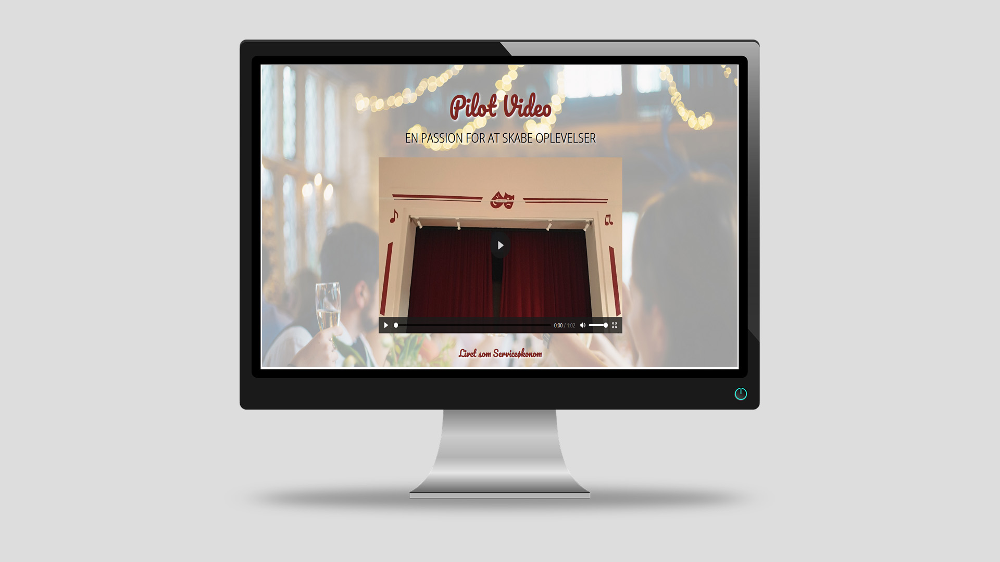

Tema 5
05.01.01 Pilotprojekt

I teamets første periode, blev vi bedt om at forberede, producere og efterredigere et interview, af en person der havde en stor passion for et givent emne. For at løse denne opgave skulle vi benytte følgende metoder:
- Benytte ekstern lydoptager
- Arrangere b-rolls og et establishing shot, samt motion graphics
- Benytte rettighedsfrit lydoptagelse
Processen
For at producere denne video, lærte vi om grundlæggende billed- og videokompositioner, herunder viden inden for billedbalance, det gyldne snit og fokus på luft i blik og taleretning af interviewpersonen. Der blev under produktionen af videoen, også sat fokus på fem-skudsreglen, til b-rolls. Her blev der blandt andet brugt b-rolls, med bl.a ”over-shoulder-shots”, ”wide-shots” og naturligvis normalperspektivet ved interviewdelen. Vi lærte endvidere at synkronisere ekstern lyd, til brug på det endelige videoklip.
Inden produktionen, lavede jeg et udkast til et ”storyboard”, med tekst til forskellige ideer til sekvenser. Her blev skrevet ting såsom at interviewpersonen, skulle ses ”i sit naturlige habitat”, ved fx at gøre ting, som personen normalt ville gøre. I mit tilfælde, interviewede jeg en veninde, som havde en passion for at skabe oplevelser, under sin uddannelse inden for oplevelsesøkonomien.
Jeg lærte at det var godt at have et storyboard, som et udgangspunkt til produktionen af filmen, men også til hjælp i efterredigeringen, da man her havde et overblik over hvilke klip, der skulle sættes ind, i en given rækkefølge. Jeg erfarede dog også at det var vigtigt at have en masse b-rolls, da disse klip hurtigt og dynamisk skulle bruges, for at gøre interviewet mere spændende at se på.
Resultatet
Resultatet på videoen kan ses her (se bilag 1).